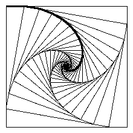

Here's the riddle:
|
Four bugs are standing at the corners of a square. At time 0 a bell rings and
they start moving towards each other. Each bug advances in the direction of the
bug which was initially at the position clockwise from it. Assuming the square is 1 meter long, and the bugs are moving in the velocity of 1 meter per second, how will it take for the bugs to meet in the center of the square? |
|
I'll use the following model to simplify the problem: suppose the bugs don't
move towards each other infinitesimly, but rather move in a straight line, and
then stop, and then move again toward their new positions, and so forth. The bugs
move toward their initial position until they reach a position which is in proportion
p to the initial distance between them. Then they move again, towards a position which
is in proportion p to their distance, and so forth. Thus they form an infinite series of squares inside each other. You can see an illustration of this scheme to the right of this text for the proportion p=0.15.
|
 |
p * a1 / [ 1 - square-root(2*p^2-2*p+1) ]
This is according to the formula that the sum of an infinite decresing geometric series is a1 / (1-q) where a1 is the value of its first item and q is the proportion between two consecutive items.
Now, to find the length an infinitesimal bug will travel, we just limit p to 0:
_____________
p*a1 p*a1 1+V 2*p^2-2*p+1
lim --------------- = lim ---------------- * ----------------- =
p->0 ____________ p->0 ____________ _____________
1-V 2*p^2-2*p+1 1-V 2*p^2-2*p+1 1+V 2*p^2-2*p+1
____________ _____________
a1*p*(1+V 2*p^2-2*p+1) a1 * (1+V 2*p^2-2*p+1 )
lim --------------------- = lim ---------------------- =
p->0 p->0 2 - 2*p
1 - 2*p^2 + 2*p - 1
_____________
a1 * (1+V 2*0-2*0+1 ) a1 * (1+1)
lim --------------------- = ------------- = a1
p->0 2 - 2*0 2
Therefore, the length of a bug's path is equal to the length of the original
square's side. The time it will take a 1 meter per second fast bugs who stand at
the corner of a 1*1 meter square to meet is 1/1 = 1 second.You can find here a Gimp script that generates a series of squares inside squares, and optionally marks the path of a single bug.